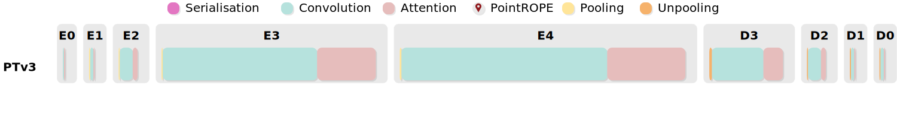

LitePT is a lightweight, high-performance 3D point cloud architecture for various point cloud processing tasks. It embodies the simple principle "convolutions for low-level geometry, attention for high-level relations" and strategically places only the required operations at each hierarchy level, avoiding wasted computations. We equip LitePT with parameter-free PointROPE positional encoding to compensate for the loss of spatial layout information that occurs when discarding convolutional layers. Together, these integrated designs give rise to a state-of-the-art backbone for point cloud analysis.
LitePT-S has $3.6\times$ fewer parameters, $2\times$ faster runtime and $2\times$ lower memory footprint than PTv3. It remains faster and more memory-efficient than PTv3 even when scaled up to 86M parameters (LitePT-L).
Already the smallest variant, LitePT-S, matches or outperforms state-of-the-art point cloud backbones across a range of benchmarks.
An often overlooked, yet important fact is that $67\%$ of the total parameter budget in PTv3 is spent on the sparse convolution layers of the positional encoding, while the Transformer part (i.e., attention and MLP) only accounts for $30\%$ of the learnable parameters. Our starting point is the question: which distinct roles and impacts different operators have along the processing hierarchy? We analyze the parameter and latency treemap of PTv3 in the following. We also show a comparison with our LitePT side-by-side.
🔍 Observation 1: The cost of different operators depends heavily along the hierarchy
Convolution occpuies the majority of the parameter count of PTv3. The parameter count of the sparse convolution layers increases substantially with depth and is largest near the bottleneck, due to the high feature dimension of the late encoder and early decoder stages. Attention, with its quadratic computational complexity, accounts for the majority of the computational cost. Importantly, that cost decreases as one progresses towards deeper stages near the bottleneck, because hierarchical downsampling quadratically reduces the number of point tokens.
(a) Breakdown of trainable parameters
(b) Breakdown of latencies
🔍 Observation 2: U-Net structure learns operator-agnostic feature hierarchy
To separate the contributions of the two modules, we design two reduced variants of the PTv3 block. In the first one, we remove the attention modules. Using exclusively this variant degenerates to a classical sparse U-Net structure. In the second variant, we remove only the sparse convolution layer to obtain a "pure" Transformer. \Cref{tab:deconstruction} contrasts the semantic segmentation performance of the two variants for ScanNet and NuScenes. It turns out that removing convolutions causes a larger performance drop than removing the attention modules, suggesting that the "positional encoding" actually does much of the heavy lifting.
| Model | #Params | ScanNet mIoU | NuScenes mIoU |
|---|---|---|---|
| PTv3 | 46.1M | 77.5 | 80.4 |
| PTv3 w/o Transformer | 32.4M | 73.4 | 76.1 |
| PTv3 w/o SPConv | 15.4M | 70.7 | 74.9 |
We visualise the learnt embeddings at each encoding stage for the three variants using PCA and find that a distinct division of labour emerges along the hierarchy, regardless of whether convolution, attention, or both are used. Early stages primarily encode local geometry, later stages capture high-level semantics.
The above analysis leads us to the following hypotheses:
It may not be necessary to use both convolution and attention at every stage. In the early stages, which prioritise local feature extraction, convolution is adequate. In deep stages, where the focus is on long-range context and semantic concepts, attention is key.
It would be a sweet spot in terms of efficiency if one could indeed avoid attention at early stages, where it is most expensive, and convolution at late stages, where it inflates the parameter count.
Pure attention blocks will require an alternative positional encoding---but storing spatial layout is apparently not the main function of the convolution, so a more parameter-efficient replacement should be possible.
Driven by the insights from the study described above, we propose a simple yet effective design that retains only the essential operations in each stage. Convolutions are allocated to earlier stages with high spatial resolution and low channel depth, and attention is reserved for deep stages with only few, but high-dimensional tokens.
Our model comprises five stages, employing convolution blocks in the early stages and Point-ROPE augmented attention blocks in the later ones. LitePT-S uses a lightweight decoder. Alternatively, adding convolution or attention blocks symmetrically in the decoder produces LitePT-S*.
Discarding the expensive convolution layer at deep hierarchy levels has an undesired side effect: one loses the positional encoding. Hence, a more parameter-efficient replacement is needed. We adapt RoPE to 3D in a straightforward manner to obtain Point Rotary Positional Embedding (Point-ROPE). Given a point feature vector $\mathbf{f}_i \in \mathbb{R}^d$ at position $\mathbf{p}_i = (x_i,y_i,z_i)$, we divide the embedding dimension $d$ into three equal subspaces corresponding to the $x$, $y$, and $z$ axes: \begin{equation} \mathbf{f}_i = [\mathbf{f}^{x}_i; \mathbf{f}^{y}_i; \mathbf{f}^{z}_i], \ \ \ \ \ \mathbf{f}^{x}_i, \mathbf{f}^{y}_i, \mathbf{f}^{z}_i \in \mathbb{R}^{d/3}\;. \end{equation} We then independently apply the standard 1D RoPE embedding to each subspace, using the respective point coordinate, and concatenate the axis-wise embeddings to form the final point representation: \begin{equation} \tilde{\mathbf{f}_i} = \begin{bmatrix} \tilde{\mathbf{f}^{x}_i} \\ \tilde{\mathbf{f}^{y}_i} \\ \tilde{\mathbf{f}^{z}_i} \end{bmatrix} = \begin{bmatrix} \text{RoPE}_{1D}(\mathbf{f}^{x}_i, x_i) \\ \text{RoPE}_{1D}(\mathbf{f}^{y}_i, y_i) \\ \text{RoPE}_{1D}(\mathbf{f}^{z}_i, z_i) \end{bmatrix}\;. \end{equation} For each point with coordinates $(x_i,y_i,z_i)$, we directly use its grid coordinates as input, which are already correctly scaled during the pooling operation. Compared to the learned convolutional positional encoding of PTv3, Point-ROPE is parameter-free, lightweight, and, by construction, rotation-friendly.
In the Point-ROPE attention module, input point features are projected to query (Q), key (K), and value (V) representations. PointROPE is then applied to Q and K, leaving V unchanged. The resulting "rotated" $\text{Q}'$ and $\text{K}'$ are fed into a standard scaled dot-product multi-head attention together with V, followed by a linear projection that produces the final output embeddings. Our PointROPE implementation is compatible with FlashAttention.
To justify our design principle, we conduct two sets of experiments on NuScenes. We begin with a baseline model that incorporates both convolution and PointROPE attention at all stages. In Experiment 1, we progressively remove attention, first from stage 0, then from stages 0 and 1, etc. In Experiment 2, we progressively remove convolution, first from stage 4, then from stages 4 and 3, etc. We then plot the mIoU of those configurations against latency (resp. parameter count).
As shown in the figure below (left), removing attention in early stages boosts efficiency with almost no drop in mIoU, whereas removing attention in later stages harms performance. On the other hand, the right figure shows that removing convolution in later stages greatly reduces the parameter count with a negligible change in mIoU, whereas removing convolution in early stages only marginally improves efficiency but adversely affects performance.
The analysis confirms that one needs not include both convolution and attention at every stage. Their contribution and their cost highly depend on the hierarchy level.
Progressively dropping attention in more of the early stages.
Progressively dropping convolution in more of the late stages.

For more results, please check out our paper and code.
@article{yuelitept2025,
title={{LitePT: Lighter Yet Stronger Point Transformer}},
author={Yue, Yuanwen and Robert, Damien and Wang, Jianyuan and Hong, Sunghwan and Wegner, Jan Dirk and Rupprecht, Christian and Schindler, Konrad},
journal={arxiv},
year={2025}
}The project is partially supported by the Circular Bio-based Europe Joint Undertaking and its members under grant agreement No 101157488. Part of the compute is supported by Swiss AI supercomputer Alps under project a144.